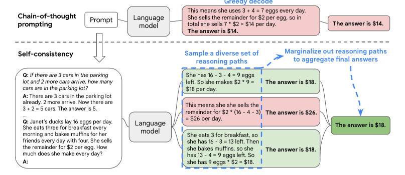

Reasoning
Scale has a reduced benefit for tasks in the Maths, Logical Reasoning, and Common Sense categories. Our results suggest that for certain flavours of mathematical or logical reasoning tasks, it is unlikely that scale alone will lead to performance breakthroughs. –(Rae et al. 2022)
It points out flat scaling curve of few task categories. Since then, google has been very creative to push the frontier with CoT (Wei et al. 2022), SC (Wang et al. 2022) and least to most (Zhou et al. 2022). CoT is the most exciting method to scale computation on tasks since few-shot in-context learning.
Informal reasoning would be solved. DeepMind and OpenAI are all into solving formal reasoning, the last frontier wrt reasoning if AI could get logic and math right.
Codex family model is the first step on solving formal reasoning. In SC and BBH (Suzgun et al. 2022), code-davinci-002 performs better than InstructGPT families on reasoning tasks. DeepMind even dives into GNN to explore architecture other than transformer. Reasoning in general would be solved as a modality in near future. It may require a specialized model, but would ultimately be fused into general LLM like image, audio and the like.
The approach to the irreducible loss does not necessarily indicate diminishing returns for representation quality or semantic content as significant semantic information may lie in the last few bits. –(Henighan et al. 2020)
To get natural language understanding right, scale is necessary. This also explains why CoT only works with scale. Small model makes too many semantic mistakes that render scaling computation with CoT worthless. SC could cancel out mistakes by majority vote to improve performance for model of all size but the increased computational cost far out weight possible gain for small model. Self-ensemble weak reasoner is a waste of resource.
Retrieval
Scale may not be the most effective method to solve world knowledge problem. 1T param model may get the last few bit of semantics but it won’t get the facts 100% right. That’s why retrieval is necessary. One could treat external knowledge database as one modality and figure out how to fuse it with general LLM.
Think about how existing multimodal model fuses modalities, ex: Dall-E (Ramesh et al. 2022), Diffusion (Rombach et al. 2022), MusicLM (Agostinelli et al. 2023). RETRO (Borgeaud et al. 2022) is a great example of treating external memory as modality and fuse it with general LM deeply. Of course it’s not plug and play but still a very interesting direction.
In-context retrieval dominates current research output because of light resource requirement. Its value is similar to prompt engineering: the most effective method to probe LLM to find new gains, but prompt engineering would never be the ultimate solution. It’s a tentative exploration process. Like instruction finetuning makes LLM to follow human instruction and do CoT in 0 shot, rather than few shot, RETRO like solution may render methods such as recitaiton (Sun et al. 2022) unnecessary. However, recitation to me is like SC for open ended text generation, which is one great first step into retrieval world by scaling computation on retrieval tasks, like CoT to rationale engineering.
Multimodal
500b+ dense LLM, 1T+ MoE, text-davinci-003 are great and useful but not enough. Have to find a way to fuse modalities. Small model like T5-11b, yes 11b is the new small lol, is still important for controlling latency and cost. Imagine doing 40 path SC on a 540b model per response for interactive UX. Not ideal. A good production example: Neeva1.
Multimodal is on fire. One big end to end model may be enough, ex: Gato (Reed et al. 2022). On the other hand, modular approach with glue architecture may work, ex: Flamingo (Alayrac et al. 2022) and RETRO. It’s great to be alive in this era of AI.
References
Citation
@online{shen2023,
author = {Lucas Shen},
title = {Self-Consistency and Chain of Thought},
date = {2023-02-05},
url = {https://lukaemon.github.io/posts/2023/sc-cot},
langid = {en}
}